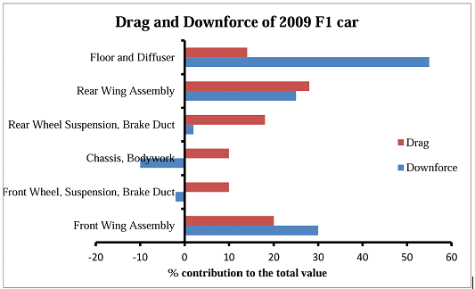

Table of contents |
|---|
| Abstract |
| 1. Introduction |
| 2.1 2009 |
| 2.2 2022 |
| 2.3 2026 |
| References |
This paper will address some of the regulation changes that most directly affect aerodynamics brought in by the FIA in the last 20 years. It will delve into how teams have adapted in response to these changes and discuss implications of these new designs. It will also consider a future rule change that will come into effect in the 2026 season.
Formula 1 is the pinnacle of motorsports with roughly 800 million fans worldwide (Brittle, 2025). In this sport, the slightest changes to the vehicle can drastically change the outcome of a race. The Fédération Internationale de l'Automobile (FIA) enforces a rulebook ensuring safe and fair competition. Over the past two decades the FIA regulations have directly affected the aerodynamic design of the cars.
The 2009 regulations were introduced (Fédération Internationale de l'Automobile, 2009) primarily to reduce the wake from a leading car to improve overtaking. The biggest changes include:
These changes led to whole car redesigns to balance the front and rear downforce. Teams focused innovation on diffuser interactions.
Fig 2.1: Breakdown of drag and downforce for individual components of 2009 F1 car (
The front wing generates around 30% of a Formula 1 car’s total downforce, while the rear wing accounts for roughly 25% (Toet, 2013). The front wing is crucial for turning while the rear wing trades rear stability for drag. Any reduction in rear downforce to improve straightline speed therefore needs recovery from the diffuser to preserve balance. The restrictions placed on the surface appendages is what led to this diffuser focus. The diffuser converts underfloor low pressure into downforce. Vortices were used to seal the now forbidden appendages improving diffuser performance in yaw (Toet, 2017). “Sealing” refers to using vortices to create a virtual barrier that reduces air leakage under the floor.
The 2022 technical regulations represented the biggest aerodynamic reset since 1983, reintroducing ground-effect principles for the first time in 40 years (FIA, 2021). The FIA’s objective was to reduce the aerodynamic wake produced by the upper-body surfaces of the car, enabling closer racing and decreasing the lap-time penalty when following. Key regulatory changes included:
By shifting downforce generation to the floor rather than vortices and appendages on the upper body, teams were forced to redesign their aerodynamic philosophies. Traditional bargeboard-driven outwash systems were banned entirely, pushing teams to focus on underfloor sealing, tunnel throat height, and ride-height management. The result was improved raceability, with cars losing approximately 15% downforce when following, compared to up to 45% pre-2022 (FIA, 2022).
The 2026 regulations will introduce smaller, lighter cars with active aerodynamics, reduced ground effect and lower drag and downforce (FIA 2025). These changes will be implemented in order to make cars more agile to allow for closer racing without relying on the Drag Reduction System (DRS).
Active aerodynamics refers to the ability for the front and rear wings to switch between high downforce and low drag modes depending on which part of the track the driver is on. This will act as a replacement for the current DRS. In a high downforce mode the car will be better at cornering where as in a low drag mode the car will perform better on straights.
Figure2.3: First look how active aero will work on the 2026 F1 cars. Credits: qvistdesigns
In Z-Mode the wings are closed. This generates more downforce. In X-Mode the flaps can open on the rear and front wings. This reduces drag. Due to a lower overall downforce, there will be a greater focus on mechanical grip from the tyre mechanics and suspension settings to ensure stability through corners. In effect, the car's handling will rely more on how well the tires stay connected to the track (F1 2025).
Brittle, C. (2025) ‘F1 sees global fanbase increase 12% to 826.5m in 2024’, SportsPro, 20 March. Available at: https://www.sportspro.com/news/f1-global-fanbase-tv-viewership-2024-season-nielsen-sports-march-2025/
Fédération Internationale de l'Automobile (FIA) (2009) 2009 Formula One Technical Regulations: Showing Alterations 17 March 2009. Available at: https://argent.fia.com/web/fia-public.nsf/7C4F8D883039AF6AC125757D00369C58/$FILE/1-2009_F1_TECHNICAL_REGULATIONS_Showing-Alterations_17-03-2009.pdf
Bhatnagar, U. R. (2014) Formula 1 race car performance improvement by optimization of the aerodynamic relationship between the front and rear wings. MSc thesis. Pennsylvania State University. Available at: https://etda.libraries.psu.edu/files/final_submissions/9695
Toet, W. (2017) Willem Toet explains motorsport diffusers. Race Tech Magazine, 8 August. Available at: https://www.racetechmag.com/2017/08/willem-toet-explains-motorsport-diffusers/
FIA (2025) New era of competition – FIA showcases future-focused Formula 1 regulations 2026 and beyond [online]. Available at: https://www.fia.com/news/new-era-competition-fia-showcases-future-focused-formula-1-regulations-2026-and-beyond
Formula 1 (2025) Explained: 2026 aerodynamic regulations – FIA Twitter mode / Z-mode [online]. Available at: https://www.formula1.com/en/latest/article/explained-2026-aerodynamic-regulations-fia-twitter-mode-z-mode-.26c1CtOzCmN3GfLMywrgb2